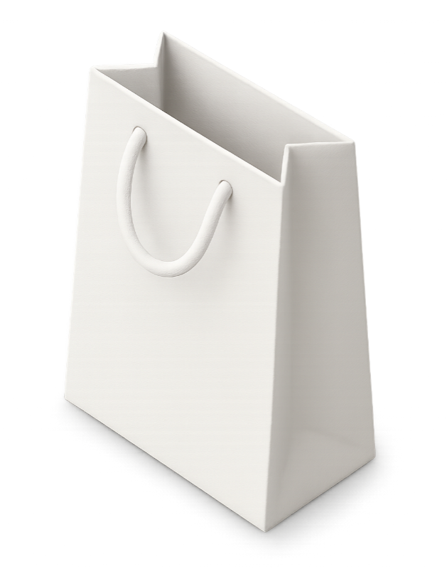
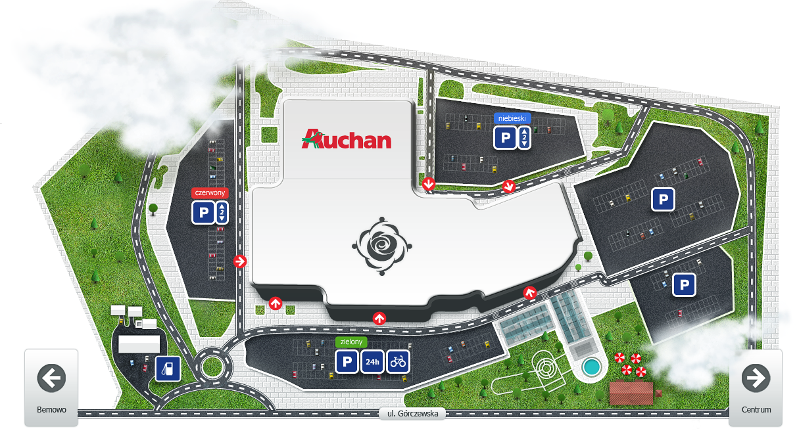

Back
Back
Klif is a stylish shopping center in Warsaw offering top fashion brands and personalized styling services.
As a Senior UX Web Designer, I collaborated directly with the client for the Klif Dom Mody website, conducting iterative research to refine user needs, performing prototyping to test and enhance designs, and ensuring an intuitive interface for exploring fashion trends, magazine/blog access, event schedules, and Warsaw center map navigation.

The Klif Fashion House website serves as an online fashion hub, showcasing seasonal trends, with a focus on designer collections and new arrivals. It provides access to a magazine for style inspiration, a blog for fashion insights, and information on top brands, while offering event schedules, a newsletter subscription, and a map for the Warsaw center location.


The navigational tool for the Klif shopping center. Interactive map allows users to explore the center's layout, locate stores, and access information about brands and services.